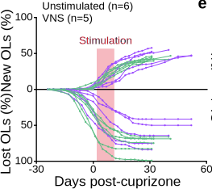
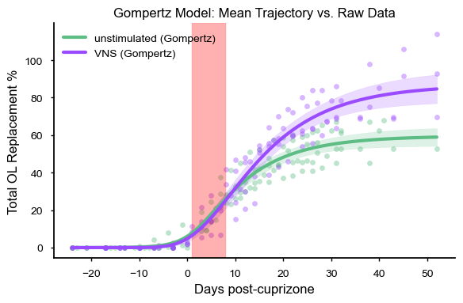
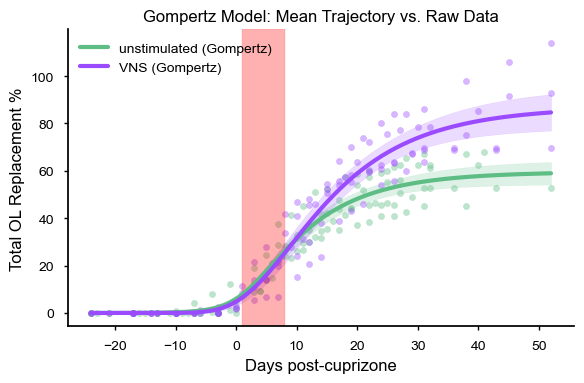
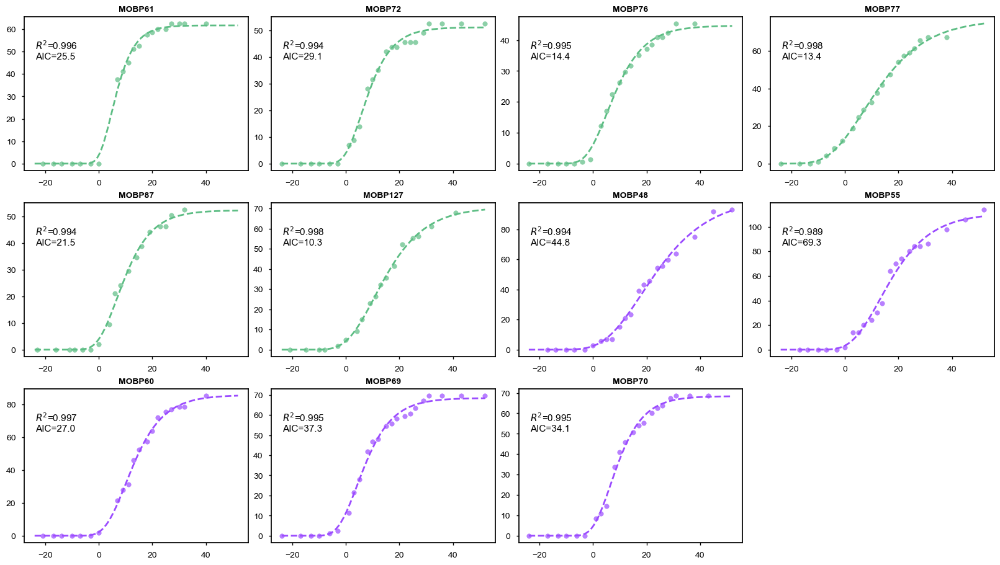
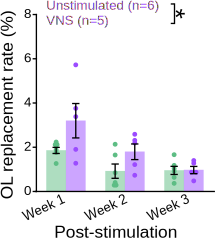
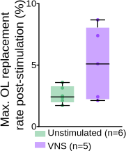

Figure 1 VNS Enhances Oligodendrogenesis#
Show code cell source
import pandas as pd
import numpy as np
from scipy import stats
import statsmodels.api as sm
import statsmodels.formula.api as smf
from tqdm import tqdm_notebook as tqdm
import nelpy as nel
import nelpy.plotting as npl
import matplotlib.pyplot as plt
from mpl_toolkits.axes_grid1.inset_locator import inset_axes
from matplotlib.patches import Patch
import seaborn as sns
# Manuscript Mode Setup (White Background / Black Text)
npl.setup(font='Arial', font_scale=2,
rc=({'figure.figsize': (3, 3),
'font.size': 12, 'axes.labelsize': 12,
'axes.titlesize': 12, 'legend.fontsize': 10,
'ytick.labelsize': 10, 'xtick.labelsize': 10,
'xtick.direction': 'out', 'ytick.direction': 'out',
'xtick.major.size': 3, 'ytick.major.size': 3,
'pdf.fonttype': 42, 'ps.fonttype': 42,
# --- MANUSCRIPT MODE OVERRIDES ---
'figure.facecolor': 'None', # Transparent background
'axes.facecolor': 'None', # Transparent axes
'savefig.facecolor': 'None', # Transparent on save
'text.color': 'black', # Black Text
'axes.labelcolor': 'black', # Black Axis Labels
'xtick.color': 'black', # Black Ticks
'ytick.color': 'black', # Black Ticks
'axes.edgecolor': 'black', # Black Spines
'legend.facecolor': 'None', # Transparent Legend
'legend.edgecolor': 'None', # No border on legend
'legend.labelcolor': 'black' # Black Legend Text
}))
import warnings
warnings.filterwarnings('ignore')
import logging
# Set the root logger's level to ERROR to suppress WARNING messages
logging.getLogger().setLevel(logging.ERROR)
%matplotlib inline
df_fig1 = pd.read_csv("../2025-09-30Fig1.csv")
df_fig1
| ID | Marker for Cup at 34 days | Behavior | Day | phase_bin_10 days | phase_bin_10 days 2, copy | phase_bin_7Days | phase_bin_7Days_complete | daysInPhase2 | days_between_TP | ... | Replacement Rate w/Phase for graph help column | Replacement rate w/phase for graph | Max_loss | MaxGain_normToLoss | rate between each tp | max rate after stim | max rate during stim | Asymptote | Growth Rate | Inflection Point | |
|---|---|---|---|---|---|---|---|---|---|---|---|---|---|---|---|---|---|---|---|---|---|
| 0 | MOBP61 | NaN | unstimulated | 0 | baseline | baseline | NaN | NaN | NaN | NaN | ... | 61 | NaN | NaN | NaN | NaN | NaN | NaN | 61.676662 | 0.213034 | 4.782487 |
| 1 | MOBP61 | NaN | unstimulated | 4 | cuprizone diet | cuprizone diet | NaN | NaN | NaN | 4.0 | ... | 61 | NaN | NaN | NaN | 0.000000 | NaN | NaN | NaN | NaN | NaN |
| 2 | MOBP61 | NaN | unstimulated | 7 | cuprizone diet | cuprizone diet | NaN | NaN | NaN | 3.0 | ... | 61 | NaN | NaN | NaN | 0.000000 | NaN | NaN | NaN | NaN | NaN |
| 3 | MOBP61 | NaN | unstimulated | 11 | cuprizone diet | cuprizone diet | NaN | NaN | NaN | 4.0 | ... | 61 | NaN | NaN | NaN | 0.000000 | NaN | NaN | NaN | NaN | NaN |
| 4 | MOBP61 | NaN | unstimulated | 14 | cuprizone diet | cuprizone diet | NaN | NaN | NaN | 3.0 | ... | 61 | NaN | NaN | NaN | 0.000000 | NaN | NaN | NaN | NaN | NaN |
| ... | ... | ... | ... | ... | ... | ... | ... | ... | ... | ... | ... | ... | ... | ... | ... | ... | ... | ... | ... | ... | ... |
| 225 | MOBP70 | NaN | VNS | 50 | post-learning1 | post-learning3 | post-learning3 | post-learning3 | 7.0 | 2.0 | ... | 55 | NaN | NaN | NaN | 0.602410 | NaN | NaN | NaN | NaN | NaN |
| 226 | MOBP70 | NaN | VNS | 53 | post-learning1 | post-learning3 | post-learning3 | post-learning3 | 7.0 | 3.0 | ... | 55 | NaN | NaN | NaN | 1.204819 | NaN | NaN | NaN | NaN | NaN |
| 227 | MOBP70 | NaN | VNS | 55 | post-learning1 | post-learning3 | post-learning3 | post-learning3 | 7.0 | 2.0 | ... | 55 | 0.860585 | 83.838384 | 68.674699 | 0.602410 | 2.409639 | NaN | NaN | NaN | NaN |
| 228 | MOBP70 | NaN | VNS | 60 | NaN | NaN | NaN | NaN | NaN | 5.0 | ... | 67 | NaN | NaN | NaN | NaN | NaN | NaN | NaN | NaN | NaN |
| 229 | MOBP70 | NaN | VNS | 67 | NaN | NaN | NaN | NaN | NaN | 7.0 | ... | 67 | NaN | NaN | NaN | NaN | NaN | NaN | NaN | NaN | NaN |
230 rows × 38 columns
Panels A & B: Experimental Design & Timeline#
In vivo imaging of VNS-mediated recovery. We utilized a longitudinal two-photon imaging approach to track oligodendrocyte dynamics in the motor cortex of MOBP-EGFP mice throughout demyelination and recovery.
Experimental Context: Protocol Design
To isolate the effects of VNS on repair, we designed a specific intervention timeline (Fig. 1b):
To isolate the effects of VNS on repair, we designed a specific intervention timeline (Fig. 1b):
- Induction: Demyelination was induced via a 0.2% cuprizone diet for 3 weeks.
- Intervention: VNS (or Sham) was delivered daily for 7 days. Crucially, stimulation began 3 days after cuprizone removal, targeting the early recovery phase rather than the injury phase.
- Validation: VNS efficacy was confirmed by acute physiological markers (see Extended Data Fig. 1d,e).


Panels C & D: Longitudinal Tracking of Demyelination#
Visualizing cellular turnover. Longitudinal imaging allowed us to classify individual cells as stable (yellow), lost (pink), or newly generated (blue) over the 7-week observation period (Fig. 1c).
Model Validation: Robust Demyelination
Before assessing recovery, we confirmed the validity of the injury model:
Before assessing recovery, we confirmed the validity of the injury model:
- Significant Loss (Fig. 1d): Individual animal traces confirm that cuprizone treatment induced a robust and significant loss of oligodendrocytes across the cohort.
- Consistency: The trajectory of oligodendrocyte loss was consistent with our previous work, establishing a reliable baseline from which to measure VNS-mediated regeneration.


Panel e (OL Loss @ 4 wks)#

Show code cell source
from IPython.display import display, HTML
# Formatting function
def pretty_print_stats(df, title):
print(f"\n{title}")
display(HTML(df.to_html(index=False, classes='table table-striped table-hover', justify='left')))
# --- PANEL E DATA (Manually entered from text) ---
data_e = {
"Comparison": ["VNS vs. Unstimulated Controls"],
"Metric": ["% Oligodendrocyte Loss (4 weeks post-cuprizone)"],
"VNS Mean ± SEM": ["62.92 ± 7.82%"],
"Control Mean ± SEM": ["76.64 ± 5.10%"],
"Test": ["Student's t-test"],
"P-Value": ["0.1632 (n.s.)"],
"Conclusion": ["No significant difference in injury severity"]
}
df_e = pd.DataFrame(data_e)
# Display
pretty_print_stats(df_e, "--- Panel E Statistics: Baseline Injury Severity ---")
--- Panel E Statistics: Baseline Injury Severity ---
| Comparison | Metric | VNS Mean ± SEM | Control Mean ± SEM | Test | P-Value | Conclusion |
|---|---|---|---|---|---|---|
| VNS vs. Unstimulated Controls | % Oligodendrocyte Loss (4 weeks post-cuprizone) | 62.92 ± 7.82% | 76.64 ± 5.10% | Student's t-test | 0.1632 (n.s.) | No significant difference in injury severity |
Model Validation: Equal Baseline Injury
Crucially, the extent of demyelination was comparable between groups prior to the intervention:
Crucially, the extent of demyelination was comparable between groups prior to the intervention:
- No Bias: There was no significant difference in the percentage of oligodendrocyte loss between VNS-treated animals (62.92%) and unstimulated controls (76.64%; p = 0.1632).
- Implication: This confirms that the subsequent enhancement in regeneration observed in the VNS group is not an artifact of milder injury, but rather a direct effect of the stimulation on the repair process.
Panel f (New vs. Lost OLs)#

Show code cell source
# --- PANEL F DATA (ANCOVA Results) ---
data_f = {
"Factor": ["Group Effect (VNS vs Control)", "Cumulative Loss Effect", "Interaction (Group × Loss)"],
"Metric": ["Cumulative % New OLs (4 weeks)", "", ""],
"Test": ["ANCOVA (Unequal Slopes)", "", ""],
"P-Value": ["0.0157 (*)", "0.0045 (**)", "0.0136 (*)"],
"Conclusion": ["Significant Treatment Effect", "Regeneration scales with injury", "VNS amplifies the response"]
}
df_f = pd.DataFrame(data_f)
# Display
pretty_print_stats(df_f, "--- Panel F Statistics: VNS Amplifies Regeneration ---")
--- Panel F Statistics: VNS Amplifies Regeneration ---
| Factor | Metric | Test | P-Value | Conclusion |
|---|---|---|---|---|
| Group Effect (VNS vs Control) | Cumulative % New OLs (4 weeks) | ANCOVA (Unequal Slopes) | 0.0157 (*) | Significant Treatment Effect |
| Cumulative Loss Effect | 0.0045 (**) | Regeneration scales with injury | ||
| Interaction (Group × Loss) | 0.0136 (*) | VNS amplifies the response |
Statistical Insight: VNS Amplifies the Regenerative Response
By analyzing cumulative oligodendrocyte gain relative to the initial loss (ANCOVA), we uncovered a dynamic interaction between injury and repair:
By analyzing cumulative oligodendrocyte gain relative to the initial loss (ANCOVA), we uncovered a dynamic interaction between injury and repair:
- Homeostatic Scaling (Loss Effect): There was a significant main effect of cumulative loss (p = 0.0045), confirming that the brain naturally scales its regenerative effort to match the severity of the injury.
- Treatment Efficacy (Group Effect): VNS significantly increased the total number of new oligodendrocytes generated (p = 0.0157).
- Amplification (Interaction): Crucially, the significant interaction (p = 0.0136) reveals that VNS does not just add a fixed number of cells; it amplifies the natural homeostatic response, driving disproportionately greater regeneration in animals with larger deficits.
Panel g (Modeled OL Replacement vs. Time)#
Show code cell source
def plot_animal_trajectories(df, palette, id_col='ID', behavior_col='Behavior',\
x_col='DaysSinceCup', y_col='Total OL Replacement %'):
"""
Plots individual animal trajectories from a dataframe.
Automatically removes rows where 'Behavior' (or other critical data) is missing.
"""
# 1. Internal Data Cleaning
original_count = len(df)
# Drop rows where critical info is missing
plot_data = df.dropna(subset=[id_col, behavior_col, x_col, y_col]).copy()
# Report cleanup results if necessary
dropped_count = original_count - len(plot_data)
if dropped_count > 0:
print(f"Data Cleanup: Dropped {dropped_count} rows containing NaNs.")
if plot_data.empty:
print(f"Warning: Dataframe is empty after cleaning. Check your column names or data.")
return
# 2. Calculate and Print N per Group
# Group by behavior and count unique IDs
group_counts = plot_data.groupby(behavior_col)[id_col].nunique()
print("-" * 30)
print(f"Sample Sizes (N) for")
for group, count in group_counts.items():
# Clean up the group name for printing
clean_group = str(group).strip()
print(f" - {clean_group}: {count} animals")
print("-" * 30)
# Get unique animals from the CLEAN data only
animals = plot_data[id_col].unique()
# 3. Setup Plot
plt.figure(figsize=(6, 4))
ax = plt.gca()
# 4. Plot Loop
for animal_id in animals:
animal_subset = plot_data[plot_data[id_col] == animal_id].sort_values(x_col)
if animal_subset.empty:
continue
group_val = animal_subset[behavior_col].iloc[0]
group = str(group_val).strip()
color = palette.get(group, 'gray')
plt.plot(animal_subset[x_col],
animal_subset[y_col],
marker='o',
linestyle='-',
alpha=0.6,
color=color,
label=group)
# 5. Formatting
handles, labels = plt.gca().get_legend_handles_labels()
by_label = dict(zip(labels, handles))
plt.legend(by_label.values(), by_label.keys(), title="Group")
plt.xlabel('Days post-cuprizone')
plt.ylabel("Total OL replacement (%)")
npl.epochplot(nel.EpochArray([[1,8]]),color='red',alpha=0.3)
npl.utils.clear_right(ax)
npl.utils.clear_top(ax)
plt.tight_layout()
plt.show()
my_palette = {'VNS': '#9b4bffff', 'unstimulated': '#5dbd84ff'}
plot_animal_trajectories(df_fig1, my_palette, )
------------------------------
Sample Sizes (N) for
- VNS: 5 animals
- unstimulated: 6 animals
------------------------------
Methodological Note: Longitudinal Imaging Trajectories
To quantify oligodendrocyte dynamics, we performed longitudinal in vivo two-photon imaging at multiple time points post-cuprizone.
To quantify oligodendrocyte dynamics, we performed longitudinal in vivo two-photon imaging at multiple time points post-cuprizone.
- Temporal Variability: Exact imaging dates and total duration varied between animals due to experimental constraints, specifically the visibility of cranial window clarity over the observation period causes some mice to not be imaged as long.
- Metric: We calculated Total OL Replacement % at each available time point. This metric allows for the assessment of regeneration trajectories despite the heterogeneity in sampling intervals.
Show code cell source
from scipy.optimize import curve_fit
from sklearn.metrics import mean_squared_error
import math
def calculate_aic(n, rss, k):
"""Calculate AIC: n * log(RSS/n) + 2k"""
if n <= 0 or rss <= 0: return np.inf
return n * np.log(rss / n) + 2 * k
# -----------------------------------------------------------------------------
# 1. GOMPERTZ MODEL
# -----------------------------------------------------------------------------
def gompertz(t, a, b, c):
"""
Gompertz growth model.
a: Asymptote (theoretical maximum)
b: Displacement (shifts curve along x-axis)
c: Growth rate
"""
return a * np.exp(-b * np.exp(-c * t))
# -----------------------------------------------------------------------------
# 2. FIT AND PLOT (Returns Individual Params)
# -----------------------------------------------------------------------------
def plot_gompertz_fits(df, palette, id_col='ID', behavior_col='Behavior', plot_individual=False,\
x_col='DaysSinceCup', y_col='Total OL Replacement %'):
"""
Fits a Gompertz curve to each animal individually and plots the SMOOTH modeled trajectory.
Returns a DataFrame containing the fitted parameters for every animal.
"""
original_count = len(df)
plot_data = df.dropna(subset=[id_col, behavior_col, x_col, y_col]).copy()
if plot_data.empty:
print("Warning: Dataframe is empty after cleaning.")
return pd.DataFrame()
fitted_params = []
animals = plot_data[id_col].unique()
x_min = plot_data[x_col].min()
x_max = plot_data[x_col].max()
x_smooth = np.linspace(x_min, x_max, 200)
# --- SETUP PLOTTING ---
if plot_individual:
n_mice = len(animals)
n_cols = 4
n_rows = math.ceil(n_mice / n_cols)
fig, axes = plt.subplots(n_rows, n_cols, figsize=(n_cols*4, n_rows*3), constrained_layout=True)
try: axes = axes.flatten()
except: axes = [axes] # Handle single plot case
else:
# Standard Aggregate Plot
plt.figure(figsize=(6, 4))
ax = plt.gca()
for i, animal_id in enumerate(animals):
animal_subset = plot_data[plot_data[id_col] == animal_id].sort_values(x_col)
if len(animal_subset) < 3:
print(f"Skipping {animal_id}: Not enough data points to fit.")
continue
x_raw = animal_subset[x_col].values
y_raw = animal_subset[y_col].values
n_points = len(x_raw)
group_val = animal_subset[behavior_col].iloc[0]
group = str(group_val).strip()
color = palette.get(group, 'gray')
try:
p0 = [max(y_raw), 10, 0.1]
bounds = ([0, 0, 0], [np.inf, np.inf, np.inf])
popt, pcov = curve_fit(gompertz, x_raw, y_raw, p0=p0, bounds=bounds, maxfev=10000)
# CALC R^2
y_pred = gompertz(x_raw, *popt)
ss_res = np.sum((y_raw - y_pred)**2)
ss_tot = np.sum((y_raw - np.mean(y_raw))**2)
r_squared = 1 - (ss_res / ss_tot) if ss_tot != 0 else 0.0
# AIC (k=3 parameters for Gompertz)
aic_score = calculate_aic(n_points, ss_res, k=3)
if plot_individual:
ax_curr = axes[i]
y_smooth = gompertz(x_smooth, *popt)
# Plot Raw Data
ax_curr.scatter(x_raw, y_raw, color=color, s=30, alpha=0.7)
# Plot Fit
ax_curr.plot(x_smooth, y_smooth, linestyle='--', color=color, linewidth=2)
# Add Text
stats_text = f'$R^2$={r_squared:.3f}\nAIC={aic_score:.1f}'
ax_curr.text(0.05, 0.85, stats_text,
transform=ax_curr.transAxes, fontsize=11,
verticalalignment='top')
ax_curr.set_title(f"{animal_id}", fontsize=10, fontweight='bold')
else:
y_smooth = gompertz(x_smooth, *popt)
plt.plot(x_smooth, y_smooth, linestyle='-', alpha=0.4, color=color, label=group)
fitted_params.append({
'ID': animal_id,
'Group': group,
'Asymptote_a': popt[0],
'Displacement_b': popt[1],
'Rate_c': popt[2]
})
except RuntimeError:
print(f"Fit failed for animal {animal_id}")
if plot_individual:
for j in range (i+1, len(axes)):
axes[j].axis('off')
plt.show()
else:
handles, labels = plt.gca().get_legend_handles_labels()
by_label = dict(zip(labels, handles))
plt.legend(by_label.values(), by_label.keys(), title="Group")
plt.xlabel('Days post-cuprizone')
plt.ylabel("Modeled OL replacement (%)")
npl.epochplot(nel.EpochArray([[1,8]]), color='red', alpha=0.3)
plt.tight_layout()
plt.show()
return pd.DataFrame(fitted_params)
# -----------------------------------------------------------------------------
# 3. STATS ON PARAMETERS (Inflection Point, Asymptote)
# -----------------------------------------------------------------------------
def analyze_gompertz_stats(df_results, target_greater_group=None):
"""
Calculates Inflection Point and performs T-tests on parameters.
"""
df_results['Inflection_Point'] = np.log(df_results['Displacement_b']) / df_results['Rate_c']
groups = df_results['Group'].unique()
if len(groups) != 2:
print(f"Error: Statistics require exactly 2 groups. Found {len(groups)}.")
return
if target_greater_group and target_greater_group in groups:
group1_name = target_greater_group
group2_name = [g for g in groups if g != target_greater_group][0]
else:
group1_name, group2_name = groups[0], groups[1]
g1_data = df_results[df_results['Group'] == group1_name]
g2_data = df_results[df_results['Group'] == group2_name]
print("="*80)
print(f"GOMPERTZ PARAMETER STATISTICS")
print(f"Hypothesis: Is {group1_name} > {group2_name}?")
print("="*80)
metrics = {
'Asymptote_a': 'Theoretical Max Replacement (%)',
'Inflection_Point': 'Time of Peak Growth (Days)',
'Rate_c': 'Growth Rate Constant (c)'
}
for param, desc in metrics.items():
vals1 = g1_data[param]
vals2 = g2_data[param]
t_2side, p_2side = stats.ttest_ind(vals1, vals2, equal_var=True, alternative='two-sided')
t_1side, p_1side = stats.ttest_ind(vals1, vals2, equal_var=True, alternative='greater')
def get_stars(p):
if p < 0.001: return "***"
if p < 0.01: return "**"
if p < 0.05: return "*"
return "n.s."
print(f"\nMetric: {desc} [{param}]")
print(f" {group1_name}: {vals1.mean():.2f} ± {vals1.sem():.2f}")
print(f" {group2_name}: {vals2.mean():.2f} ± {vals2.sem():.2f}")
print(f" Difference: {vals1.mean() - vals2.mean():+.2f}")
print("-" * 40)
print(f" Two-Sided: p={p_2side:.4f} [{get_stars(p_2side)}]")
print(f" One-Sided: p={p_1side:.4f} [{get_stars(p_1side)}]")
print("." * 80)
# -----------------------------------------------------------------------------
# 4. EVALUATE GOODNESS OF FIT (GROUP TEMPLATE RMSE)
# -----------------------------------------------------------------------------
def run_metric_permutation_test(df, metric_col, group_col, n_perm=1000):
groups = df[group_col].unique()
if len(groups) != 2: return np.nan
g1 = df[df[group_col] == groups[0]][metric_col].dropna().values
g2 = df[df[group_col] == groups[1]][metric_col].dropna().values
if len(g1) == 0 or len(g2) == 0: return np.nan
obs_diff = np.abs(np.mean(g1) - np.mean(g2))
pooled = np.concatenate([g1, g2])
n1 = len(g1)
null_diffs = []
for _ in range(n_perm):
np.random.shuffle(pooled)
p1 = pooled[:n1]
p2 = pooled[n1:]
null_diffs.append(np.abs(np.mean(p1) - np.mean(p2)))
return (np.sum(np.array(null_diffs) >= obs_diff) + 1) / (n_perm + 1)
def evaluate_gompertz_fit(df_raw, df_params, id_col='ID',
x_col='DaysSinceCup', y_col='Total OL Replacement %'):
"""
Calculates RMSE for 4 phases by comparing each animal's data against its GROUP TEMPLATE.
Runs permutation tests to compare fit quality (RMSE) between groups.
"""
# 1. Fit Group Templates first
print("Fitting Group Templates (Pooled Data)...")
templates = {}
groups = df_params['Group'].unique()
for group in groups:
subset = df_raw.dropna(subset=[x_col, y_col])
group_ids = df_params[df_params['Group'] == group][id_col].values
subset = subset[subset[id_col].isin(group_ids)]
x_all = subset[x_col].values
y_all = subset[y_col].values
try:
p0 = [max(y_all), 10, 0.1]
bounds = ([0, 0, 0], [np.inf, np.inf, np.inf])
popt, _ = curve_fit(gompertz, x_all, y_all, p0=p0, bounds=bounds, maxfev=10000)
templates[group] = popt
except:
print(f"Warning: Could not fit Group Template for {group}")
templates[group] = [np.nan, np.nan, np.nan]
metrics_list = []
phases = [
('Overall', lambda x: np.full(x.shape, True, dtype=bool)),
('Early', lambda x: x <= 0),
('Middle', lambda x: (x > 0) & (x <= 15)),
('Late', lambda x: x > 15)
]
for index, row in df_params.iterrows():
animal_id = row[id_col]
group = row['Group']
animal_data = df_raw[df_raw[id_col] == animal_id].dropna(subset=[x_col, y_col])
if animal_data.empty: continue
x_obs = animal_data[x_col].values
y_obs = animal_data[y_col].values
# USE GROUP TEMPLATE PARAMETERS
if group in templates and not np.isnan(templates[group][0]):
a, b, c = templates[group]
y_pred = gompertz(x_obs, a, b, c)
else:
y_pred = np.full_like(x_obs, np.nan)
row_metrics = {id_col: animal_id, 'Group': group}
for phase_name, condition in phases:
mask = condition(x_obs)
if np.sum(mask) > 0 and not np.isnan(y_pred).all():
rmse = np.sqrt(mean_squared_error(y_obs[mask], y_pred[mask]))
else:
rmse = np.nan
row_metrics[f'RMSE_{phase_name}'] = rmse
metrics_list.append(row_metrics)
df_metrics = pd.DataFrame(metrics_list)
# --- REPORTING ---
print("="*90)
print("GOMPERTZ GROUP TEMPLATE EVALUATION")
print("Comparing deviation (RMSE) of individuals from the Group S-Curve")
print("="*90)
metric_cols = [c for c in df_metrics.columns if 'RMSE' in c]
if len(groups) == 2:
print(f"{'Metric':<18} | {groups[0]:<12} | {groups[1]:<12} | {'Diff':<8} | {'P-Value':<8}")
print("-" * 90)
for metric in metric_cols:
p_val = run_metric_permutation_test(df_metrics, metric, 'Group')
g1_mean = df_metrics[df_metrics['Group'] == groups[0]][metric].mean()
g2_mean = df_metrics[df_metrics['Group'] == groups[1]][metric].mean()
diff = g1_mean - g2_mean
sig = "*" if p_val < 0.05 else "n.s."
if p_val < 0.01: sig = "**"
print(f"{metric:<18} | {g1_mean:>9.2f} | {g2_mean:>9.2f} | {diff:>+6.2f} | {p_val:.4f} {sig}")
print("-" * 90)
print("INTERPRETATION: Significantly higher RMSE indicates the Group S-Curve fails to capture individual behavior.")
return df_metrics
# -----------------------------------------------------------------------------
# GOMPERTZ VISUALIZATION (Mean +/- SEM)
# -----------------------------------------------------------------------------
def plot_gompertz_mean_with_sem(df_raw, df_params, palette,
id_col='ID', group_col='Behavior',
x_col='DaysSinceCup', y_col='Total OL Replacement %'):
"""
Plots the MEAN Gompertz trajectory +/- SEM for each group.
This effectively visualizes the "Average Model" vs. the "Raw Data".
"""
# Setup Plot
plt.figure(figsize=(6, 4))
ax = plt.gca()
# Define common grid for averaging
x_min = df_raw[x_col].min()
x_max = df_raw[x_col].max()
x_grid = np.linspace(x_min, x_max, 200)
groups = df_params['Group'].unique()
max_y = 0
for group in groups:
color = palette.get(str(group).strip(), 'gray')
# Get parameters for all animals in this group
group_params = df_params[df_params['Group'] == group]
# 1. Generate curves for EVERY animal on the common grid
individual_curves = []
for _, row in group_params.iterrows():
a, b, c = row['Asymptote_a'], row['Displacement_b'], row['Rate_c']
# Predict on grid
y_pred = gompertz(x_grid, a, b, c)
individual_curves.append(y_pred)
if not individual_curves: continue
# 2. Calculate Mean and SEM across the population of curves
curve_array = np.array(individual_curves)
with warnings.catch_warnings():
warnings.simplefilter("ignore")
mean_curve = np.nanmean(curve_array, axis=0)
sem_curve = stats.sem(curve_array, axis=0)
# 3. Plot the Model (Line + Ribbon)
plt.plot(x_grid, mean_curve, color=color, linewidth=3, label=f"{group} (Gompertz)")
plt.fill_between(x_grid,
mean_curve - sem_curve,
mean_curve + sem_curve,
color=color, alpha=0.2)
# 4. Plot the Raw Data
# We need to map the group name back to the raw dataframe's group column
# Assuming direct string match or stripping
subset_raw = df_raw.dropna(subset=[group_col])
subset_raw = subset_raw[subset_raw[group_col].astype(str).str.strip() == str(group).strip()]
plt.scatter(subset_raw[x_col], subset_raw[y_col], color=color, alpha=0.4, s=20)
if not subset_raw.empty:
current_max = subset_raw[y_col].max()
if current_max > max_y: max_y = current_max
# Formatting
npl.epochplot(nel.EpochArray([[1,8]]), color='red', alpha=0.3)
npl.utils.clear_right(ax)
npl.utils.clear_top(ax)
plt.title("Gompertz Model: Mean Trajectory vs. Raw Data")
plt.xlabel("Days post-cuprizone")
plt.ylabel(y_col)
plt.legend(loc='upper left')
plt.tight_layout()
plt.show()
df_results_fig1 = plot_gompertz_fits(df_fig1, palette={'VNS': '#9b4bffff', 'unstimulated': '#5dbd84ff'})
plot_gompertz_mean_with_sem(df_fig1, df_results_fig1,
palette={'VNS': '#9b4bffff', 'unstimulated': '#5dbd84ff'})
analyze_gompertz_stats(df_results_fig1, target_greater_group="VNS")
evaluate_gompertz_fit(df_fig1, df_results_fig1)
 

================================================================================
GOMPERTZ PARAMETER STATISTICS
Hypothesis: Is VNS > unstimulated?
================================================================================
Metric: Theoretical Max Replacement (%) [Asymptote_a]
VNS: 86.99 ± 8.59
unstimulated: 59.59 ± 5.07
Difference: +27.40
----------------------------------------
Two-Sided: p=0.0187 [*]
One-Sided: p=0.0093 [**]
................................................................................
Metric: Time of Peak Growth (Days) [Inflection_Point]
VNS: 10.43 ± 2.47
unstimulated: 6.75 ± 0.87
Difference: +3.68
----------------------------------------
Two-Sided: p=0.1627 [n.s.]
One-Sided: p=0.0814 [n.s.]
................................................................................
Metric: Growth Rate Constant (c) [Rate_c]
VNS: 0.12 ± 0.01
unstimulated: 0.14 ± 0.02
Difference: -0.02
----------------------------------------
Two-Sided: p=0.4688 [n.s.]
One-Sided: p=0.7656 [n.s.]
................................................................................
Fitting Group Templates (Pooled Data)...
==========================================================================================
GOMPERTZ GROUP TEMPLATE EVALUATION
Comparing deviation (RMSE) of individuals from the Group S-Curve
==========================================================================================
Metric | unstimulated | VNS | Diff | P-Value
------------------------------------------------------------------------------------------
RMSE_Overall | 5.62 | 8.26 | -2.64 | 0.1429 n.s.
RMSE_Early | 1.83 | 1.48 | +0.35 | 0.6543 n.s.
RMSE_Middle | 5.64 | 8.30 | -2.66 | 0.2817 n.s.
RMSE_Late | 7.18 | 9.98 | -2.80 | 0.1998 n.s.
------------------------------------------------------------------------------------------
INTERPRETATION: Significantly higher RMSE indicates the Group S-Curve fails to capture individual behavior.
| ID | Group | RMSE_Overall | RMSE_Early | RMSE_Middle | RMSE_Late | |
|---|---|---|---|---|---|---|
| 0 | MOBP61 | unstimulated | 8.491837 | 2.453506 | 12.732574 | 8.584114 |
| 1 | MOBP72 | unstimulated | 3.441403 | 0.894099 | 2.223661 | 4.826859 |
| 2 | MOBP76 | unstimulated | 7.355261 | 1.200695 | 4.481986 | 11.210911 |
| 3 | MOBP77 | unstimulated | 6.315817 | 4.189622 | 4.674059 | 8.542020 |
| 4 | MOBP87 | unstimulated | 3.394691 | 1.729710 | 3.841452 | 4.334044 |
| 5 | MOBP127 | unstimulated | 4.702710 | 0.517691 | 5.882202 | 5.610539 |
| 6 | MOBP48 | VNS | 10.862578 | 1.859385 | 14.491914 | 11.467632 |
| 7 | MOBP55 | VNS | 11.371677 | 2.118407 | 4.850927 | 16.360978 |
| 8 | MOBP60 | VNS | 4.332051 | 2.077192 | 4.234010 | 5.651283 |
| 9 | MOBP69 | VNS | 8.665949 | 0.177670 | 11.617662 | 8.844713 |
| 10 | MOBP70 | VNS | 6.046035 | 1.181262 | 6.307432 | 7.581714 |
Statistical Insight: VNS Enhances Regenerative Capacity
Modeling oligodendrocyte dynamics with a Gompertz growth function reveals a significant long-term benefit of VNS:
Modeling oligodendrocyte dynamics with a Gompertz growth function reveals a significant long-term benefit of VNS:
- Higher Theoretical Maximum: VNS-treated animals exhibited a significantly higher asymptotic limit for oligodendrocyte replacement (86.99% ± 8.59%) compared to unstimulated controls (59.59% ± 5.07%; p = 0.0187). This suggests VNS expands the "ceiling" for repair.
- Similar Kinetics: The rate of growth (Rate c) and the time of peak regeneration (Inflection Point) were not significantly different between groups (p > 0.05), indicating that VNS scales the magnitude of repair without fundamentally altering its temporal onset.
Model Validation: Lack of Goodness-of-Fit
While the parameter comparison suggests a treatment effect, a deeper evaluation of the model's fit reveals critical limitations:
While the parameter comparison suggests a treatment effect, a deeper evaluation of the model's fit reveals critical limitations:
- High Residual Error: The Root Mean Square Error (RMSE) for both groups is substantial (Unstimulated: 5.62, VNS: 8.26), indicating that individual animal trajectories deviate considerably from the group-level "S-curve."
- Failure to Capture Complexity: The non-significant difference in RMSE between groups (p = 0.1429) suggests the model performs equally poorly for both. The high late-phase error (RMSE > 7) implies that a simple asymptotic growth model fails to capture the complex, potentially multiphasic dynamics of long-term remyelination observed in this dataset.
Show code cell source
df_results_fig1 = plot_gompertz_fits(df_fig1, palette={'VNS': '#9b4bffff', 'unstimulated': '#5dbd84ff'},plot_individual=True)

Methodological Caveat: High $R^2$ Does Not Imply Model Validity
In our analysis, the Gompertz model yielded $R^2$ values consistently exceeding 0.97. However, a high $R^2$ is not sufficient proof that the chosen model (S-curve) is the correct structural fit for the biological process. The following proof-of-concept demonstrates how a Gompertz curve can "force-fit" fundamentally linear data while still producing a near-perfect $R^2$ score.
In our analysis, the Gompertz model yielded $R^2$ values consistently exceeding 0.97. However, a high $R^2$ is not sufficient proof that the chosen model (S-curve) is the correct structural fit for the biological process. The following proof-of-concept demonstrates how a Gompertz curve can "force-fit" fundamentally linear data while still producing a near-perfect $R^2$ score.
Show code cell source
from sklearn.metrics import r2_score
# --- 2. Generate Synthetic LINEAR Data ---
def linear(t, m, c):
"""2-Parameter Linear Model"""
return m * t + c
def calculate_aic(n, rss, k):
"""Calculate AIC: n * log(RSS/n) + 2k"""
if n <= 0 or rss <= 0: return np.inf
return n * np.log(rss / n) + 2 * k
# --- 2. Generate Synthetic LINEAR Data ---
np.random.seed(42) # for reproducible results
x_syn = np.linspace(0, 60, 30)
# Define underlying linear trend (y = mx + c)
true_slope = 1.2
true_intercept = 5
y_linear_true = true_slope * x_syn + true_intercept
# Add random noise to simulate real biological data
noise_level = 3.0
y_syn_noisy = y_linear_true + np.random.normal(0, noise_level, len(x_syn))
# --- 3. Fit Models & Calculate Metrics ---
# A. Fit Gompertz (3 params)
# Generous bounds to allow it to mimic a line
p0_g = [max(y_syn_noisy)*2, 10, 0.05]
bounds_g = ([0, 0, 0], [np.inf, np.inf, np.inf])
try:
popt_g, _ = curve_fit(gompertz, x_syn, y_syn_noisy, p0=p0_g, bounds=bounds_g, maxfev=50000)
y_pred_g = gompertz(x_syn, *popt_g)
# Metrics
r2_g = r2_score(y_syn_noisy, y_pred_g)
rss_g = np.sum((y_syn_noisy - y_pred_g)**2)
aic_g = calculate_aic(len(x_syn), rss_g, 3) # k=3 parameters
status_g = "Success"
except:
status_g = "Failed"
aic_g = np.inf
# B. Fit Linear (2 params)
try:
popt_l, _ = curve_fit(linear, x_syn, y_syn_noisy)
y_pred_l = linear(x_syn, *popt_l)
# Metrics
r2_l = r2_score(y_syn_noisy, y_pred_l)
rss_l = np.sum((y_syn_noisy - y_pred_l)**2)
aic_l = calculate_aic(len(x_syn), rss_l, 2) # k=2 parameters
except:
aic_l = np.inf
# --- 4. Visualize the Comparison ---
plt.figure(figsize=(9, 6))
# Plot Data
plt.scatter(x_syn, y_syn_noisy, color='gray', alpha=0.8, label='Synthetic Data (Linear+Noise)')
plt.plot(x_syn, y_linear_true, color='green', linestyle=':', linewidth=2, label='True Linear Trend')
if status_g == "Success":
# Plot Gompertz Fit
x_smooth = np.linspace(0, 60, 200)
plt.plot(x_smooth, gompertz(x_smooth, *popt_g), color='red', linewidth=3, label='Gompertz Fit')
# Determine Winner
winner = "Linear" if aic_l < aic_g else "Gompertz"
# Text Box with Stats Comparison
textstr = '\n'.join((
r'$\bf{Model\ Comparison}$',
r'--------------------------',
r'$\bf{Gompertz\ (3\ params)}$',
r' $R^2 = %.4f$' % (r2_g, ),
r' AIC = %.1f (Higher)' % (aic_g, ),
r'',
r'$\bf{Linear\ (2\ params)}$',
r' $R^2 = %.4f$' % (r2_l, ),
r' AIC = %.1f (Lower)' % (aic_l, ),
r'--------------------------',
r'$\bf{Winner:\ %s}$' % (winner, ),
r'(AIC penalizes overfitting)'
))
plt.text(0.05, 0.95, textstr, transform=plt.gca().transAxes, fontsize=11,
verticalalignment='top')
else:
plt.title("Gompertz Fit Failed")
plt.title("Proof of Concept: AIC Correctly Identifies the 'True' Model\n(Even when $R^2$ is identical)", fontsize=13)
plt.xlabel("Time (Days)")
plt.ylabel("Replacement (%)")
plt.legend(loc='lower right')
plt.grid(True, alpha=0.3)
plt.tight_layout()
plt.show()

Statistical Critique: The $R^2$ Paradox
The simulation above highlights the critical danger of relying on $R^2$ for model selection:
The simulation above highlights the critical danger of relying on $R^2$ for model selection:
- The Ground Truth: The data is undeniably linear (generated via y = mx + c).
- The Mimicry: The Gompertz model (red solid line) fits the data "perfectly" by mathematically stretching out the rising phase of its S-curve.
- The Result: $R^2$ is extremely high (0.9853), falsely implying a perfect model fit.
Hypothesis Confirmation: Directional Consistency
Practically, the core question is whether VNS enhances regeneration. The Gompertz model (in our biorxiv submission) suggested that VNS-treated animals achieve a significantly higher asymptotic limit for oligodendrocyte replacement.
The Question: What if we test this hypothesis in a non-parametric manner, without forcing the data to fit a specific mathematical curve?
Prediction: If the effect is robust, a model-free analysis (e.g., Mann-Whitney U on empirical maxima) should confirm that VNS drives significantly greater replacement than unstimulated controls, validating the finding independent of model choice.
Practically, the core question is whether VNS enhances regeneration. The Gompertz model (in our biorxiv submission) suggested that VNS-treated animals achieve a significantly higher asymptotic limit for oligodendrocyte replacement.
The Question: What if we test this hypothesis in a non-parametric manner, without forcing the data to fit a specific mathematical curve?
Prediction: If the effect is robust, a model-free analysis (e.g., Mann-Whitney U on empirical maxima) should confirm that VNS drives significantly greater replacement than unstimulated controls, validating the finding independent of model choice.
Show code cell source
from scipy import stats, integrate
import statsmodels.api as sm
def analyze_non_parametric(df, palette, target_greater_group=None,
smoothing_window_days=7,\
id_col='ID', group_col='Behavior',\
x_col='DaysSinceCup', y_col='Total OL Replacement %'):
"""
Performs model-free validation:
1. Calculates Max Observed Value & AUC per animal.
2. Runs Mann-Whitney U Tests (Two-Sided AND One-Sided).
3. Plots CUSTOM LOESS curves (Physics-Constrained + Tunable Window).
Args:
target_greater_group (str): The name of the group you hypothesize is LARGER.
(e.g., 'VNS').
smoothing_window_days (int): The size of the smoothing window in X-axis units (Days).
Larger = smoother line (less detail).
Smaller = wigglier line (more noise).
"""
# 1. CLEAN DATA
df_clean = df.dropna(subset=[id_col, group_col, x_col, y_col]).copy()
metrics_list = []
# 2. CALCULATE SUMMARY METRICS (Per Animal)
animals = df_clean[id_col].unique()
for animal in animals:
subset = df_clean[df_clean[id_col] == animal].sort_values(x_col)
if len(subset) < 2:
continue # Need points to make a curve
x = subset[x_col].values
y = subset[y_col].values
# Metric A: Max Observed Value (The empirical ceiling)
max_val = np.max(y)
# Metric B: AUC (Area Under Curve) - Normalized by duration
# This represents "Total Exposure" to replacement over the experiment
duration = x[-1] - x[0]
if duration > 0:
# Trapz calculates area using trapezoids connecting the dots
auc = integrate.trapezoid(y, x) / duration
else:
auc = 0
metrics_list.append({
'ID': animal,
'Group': str(subset[group_col].iloc[0]).strip(), # strip whitespace
'Max_Value': max_val,
'AUC': auc
})
df_metrics = pd.DataFrame(metrics_list)
# 3. STATISTICAL REPORT
print("="*80)
print("NON-PARAMETRIC ROBUSTNESS CHECK (Mann-Whitney U)")
if target_greater_group:
print(f"Hypothesis Direction: Is {target_greater_group} > Control?")
else:
print("Hypothesis: Two-Sided (Any Difference)")
print("="*80)
groups = df_metrics['Group'].unique()
if len(groups) != 2:
print(f"Error: Need exactly 2 groups. Found: {groups}")
return
# Identify Target vs Control
if target_greater_group:
if target_greater_group not in groups:
print(f"Error: target_greater_group '{target_greater_group}' not found. Available: {groups}")
return
g1_name = target_greater_group
g2_name = [g for g in groups if g != target_greater_group][0]
else:
g1_name, g2_name = groups[0], groups[1]
g1 = df_metrics[df_metrics['Group'] == g1_name]
g2 = df_metrics[df_metrics['Group'] == g2_name]
# Helper for stars
def get_stars(p):
if p < 0.001: return "***"
if p < 0.01: return "**"
if p < 0.05: return "*"
return "n.s."
# Test both metrics
for metric in ['Max_Value', 'AUC']:
# 1. Two-Sided Test
u_2, p_2 = stats.mannwhitneyu(g1[metric], g2[metric], alternative='two-sided')
# 2. One-Sided Test (Greater)
u_1, p_1 = stats.mannwhitneyu(g1[metric], g2[metric], alternative='greater')
mean1, se1 = g1[metric].mean(), g1[metric].sem()
mean2, se2 = g2[metric].mean(), g2[metric].sem()
stars_2 = get_stars(p_2)
stars_1 = get_stars(p_1)
print(f"\nMetric: {metric} (per animal)")
print(f" {g1_name} (Target): {mean1:.2f} ± {se1:.2f} (n={len(g1)})")
print(f" {g2_name} (Control): {mean2:.2f} ± {se2:.2f} (n={len(g2)})")
print("-" * 40)
print(f" Two-Sided Mann-Whitney: U={u_2}, p={p_2:.4f} [{stars_2}]")
print(f" One-Sided Mann-Whitney: U={u_1}, p={p_1:.4f} [{stars_1}] (Testing {g1_name} > {g2_name})")
print("." * 80)
# 4. VISUALIZATION: LOESS PLOT
plt.figure(figsize=(8, 4))
ax = plt.gca()
# A. Plot Raw Data (Faint background dots)
sns.scatterplot(data=df_clean, x=x_col, y=y_col, hue=group_col, palette=palette,
alpha=0.3, s=20, legend=False)
# B. Plot Smooth Lines (Manual Calculation)
print("\n" + "="*60)
print(f"LOESS SMOOTHING DETAILS (Target Window: ~{smoothing_window_days} Days)")
print("="*60)
for group in groups:
subset = df_clean[df_clean[group_col] == group].sort_values(x_col)
if subset.empty: continue
x_vals = subset[x_col].values
y_vals = subset[y_col].values
color = palette.get(str(group).strip(), 'gray')
# --- DYNAMIC FRACTION CALCULATION ---
# Convert "Days" into the "Fraction" that statsmodels requires
duration = x_vals.max() - x_vals.min()
if duration > 0:
frac = smoothing_window_days / duration
else:
frac = 0.3
# Keep frac within safe bounds (0.05 to 1.0)
frac = max(0.05, min(1.0, frac))
# --- MANUAL LOESS CALCULATION ---
# Calculate the smooth curve
lowess = sm.nonparametric.lowess(y_vals, x_vals, frac=frac)
lowess_x = lowess[:, 0]
lowess_y = lowess[:, 1]
# --- THE FIX: CLAMP NEGATIVE VALUES ---
# Force the curve to respect biology (cannot have negative cells)
lowess_y_clamped = np.clip(lowess_y, 0, None)
# Plot the result
plt.plot(lowess_x, lowess_y_clamped, color=color, linewidth=3, label=group)
print(f"Group '{group}': Duration={duration:.1f}d -> using frac={frac:.2f}")
npl.utils.clear_right(ax)
npl.utils.clear_top(ax)
plt.title("Model-Free Trend (LOESS)")
plt.xlabel("Days post-cuprizone")
plt.ylabel("Total OL Replacement (%)")
plt.legend(title='Group', loc='upper left', bbox_to_anchor=(1, 1))
plt.tight_layout()
plt.show()
analyze_non_parametric(df_fig1, palette={'VNS': '#9b4bffff', 'unstimulated': '#5dbd84ff'}, target_greater_group='VNS',smoothing_window_days=21)
================================================================================
NON-PARAMETRIC ROBUSTNESS CHECK (Mann-Whitney U)
Hypothesis Direction: Is VNS > Control?
================================================================================
Metric: Max_Value (per animal)
VNS (Target): 86.12 ± 8.37 (n=5)
unstimulated (Control): 58.02 ± 3.73 (n=6)
----------------------------------------
Two-Sided Mann-Whitney: U=30.0, p=0.0080 [**]
One-Sided Mann-Whitney: U=30.0, p=0.0040 [**] (Testing VNS > unstimulated)
................................................................................
Metric: AUC (per animal)
VNS (Target): 40.22 ± 3.37 (n=5)
unstimulated (Control): 26.87 ± 2.19 (n=6)
----------------------------------------
Two-Sided Mann-Whitney: U=30.0, p=0.0043 [**]
One-Sided Mann-Whitney: U=30.0, p=0.0022 [**] (Testing VNS > unstimulated)
................................................................................
============================================================
LOESS SMOOTHING DETAILS (Target Window: ~21 Days)
============================================================
Group 'unstimulated': Duration=76.0d -> using frac=0.28
Group 'VNS': Duration=76.0d -> using frac=0.28
Critical Insight: The "Artificial Plateau" Problem
The model-free LOESS analysis reveals a crucial feature masked by the previous modeling attempts:
The model-free LOESS analysis reveals a crucial feature masked by the previous modeling attempts:
- No Plateau: The VNS group (purple trace) does not show signs of saturation; the replacement rate continues to climb even at the end of the imaging window.
- The Error of Asymptotes: Because the data has not yet plateaued, the Gompertz model was forced to mathematically "guess" where the ceiling would eventually be. This extrapolation likely underestimated the true divergence between the groups by artificially pulling the VNS asymptote down to fit the available window.
Show code cell source
from sklearn.gaussian_process import GaussianProcessRegressor
from sklearn.gaussian_process.kernels import RBF, WhiteKernel, ConstantKernel as C
from scipy.stats import chi2
Show code cell source
# -----------------------------------------------------------------------------
# 1. HELPER: GENERATE HIERARCHICAL CURVES (PRE-FIT)
# -----------------------------------------------------------------------------
def get_individual_gp_curves(df, id_col, group_col, x_col, y_col, grid):
"""
Fits a GP to each animal individually and returns the predicted curves.
"""
groups = df[group_col].unique()
animals = df[id_col].unique()
curves = {}
labels = {}
# Kernel: RBF for shape + WhiteKernel for individual animal noise
base_kernel = C(1.0) * RBF(length_scale=10.0, length_scale_bounds=(2, 60)) + \
WhiteKernel(noise_level=0.1, noise_level_bounds=(1e-5, 5))
for animal in animals:
subset = df[df[id_col] == animal].dropna(subset=[x_col, y_col]).sort_values(x_col)
if len(subset) < 2: continue
# Get Group
group = subset[group_col].iloc[0]
labels[animal] = str(group).strip()
# Fit GP
X = subset[x_col].values.reshape(-1, 1)
y = subset[y_col].values
gp = GaussianProcessRegressor(kernel=base_kernel, n_restarts_optimizer=5, normalize_y=True)
gp.fit(X, y)
# Predict on common grid
y_pred = gp.predict(grid, return_std=False)
# STRICT MASKING (No Extrapolation)
min_d, max_d = subset[x_col].min(), subset[x_col].max()
y_pred[grid.flatten() < min_d] = np.nan
y_pred[grid.flatten() > max_d] = np.nan
curves[animal] = y_pred
return curves, labels
# -----------------------------------------------------------------------------
# 2. STATISTICAL ENGINE (HIERARCHICAL LIKELIHOOD)
# -----------------------------------------------------------------------------
def calculate_hierarchical_D(curve_matrix, group_assignments):
"""
Calculates D = 2 * (LL_Separate - LL_Shared) based on curve distributions.
"""
# 1. SHARED MODEL (Grand Mean & Variance)
mu_all = np.nanmean(curve_matrix, axis=0)
var_all = np.nanvar(curve_matrix, axis=0) + 1e-6
# Log-Likelihood (Shared)
resid_sq_all = (curve_matrix - mu_all) ** 2
ll_terms_all = -0.5 * np.log(var_all) - (resid_sq_all / (2 * var_all))
LL_shared = np.nansum(ll_terms_all)
# 2. SEPARATE MODELS
LL_separate = 0
unique_groups = np.unique(group_assignments)
for g in unique_groups:
indices = [i for i, x in enumerate(group_assignments) if x == g]
if len(indices) == 0: continue
sub_matrix = curve_matrix[indices]
# Group Parameters
mu_g = np.nanmean(sub_matrix, axis=0)
var_g = np.nanvar(sub_matrix, axis=0) + 1e-6
# Group Likelihood
resid_sq_g = (sub_matrix - mu_g) ** 2
ll_terms_g = -0.5 * np.log(var_g) - (resid_sq_g / (2 * var_g))
LL_separate += np.nansum(ll_terms_g)
# 3. STATISTIC
return 2 * (LL_separate - LL_shared)
def run_rolling_hierarchical_permutation(curve_dict, label_dict, grid,
start_day, end_day,
window_size, step_size,
n_permutations=1000, random_state=42):
"""
Slides a window across the curves and runs stats.
"""
ids = list(curve_dict.keys())
full_curves = np.array([curve_dict[i] for i in ids])
true_labels = np.array([label_dict[i] for i in ids])
rng = np.random.default_rng(random_state)
results = []
curr_start = start_day
print(f"Running Rolling Stats (Window={window_size}d, Step={step_size}d, N={n_permutations})...")
while curr_start + window_size <= end_day:
curr_end = curr_start + window_size
# Mask curves for this window
window_curves = full_curves.copy()
mask_indices = (grid.flatten() < curr_start) | (grid.flatten() > curr_end)
window_curves[:, mask_indices] = np.nan
# Calculate Observed D
try:
D_obs = calculate_hierarchical_D(window_curves, true_labels)
except:
curr_start += step_size
continue
# Permutation Loop
null_scores = []
for _ in range(n_permutations):
shuffled_labels = rng.permutation(true_labels)
try:
D_null = calculate_hierarchical_D(window_curves, shuffled_labels)
null_scores.append(D_null)
except:
continue
if len(null_scores) > 0:
null_scores = np.array(null_scores)
p_val = (np.sum(null_scores >= D_obs) + 1) / (len(null_scores) + 1)
results.append((curr_start, curr_end, p_val))
curr_start += step_size
print("\nRolling Stats Complete.")
return results
def merge_significant_windows(windows):
"""
Merges overlapping or continuous windows into single blocks.
Tracks the MINIMUM p-value (peak significance) for that block.
"""
if not windows: return []
# Sort by start time
windows.sort(key=lambda x: x[0])
merged = []
if not windows: return merged
curr_start, curr_end, curr_min_p = windows[0]
for i in range(1, len(windows)):
next_start, next_end, next_p = windows[i]
# Check overlap (next start <= curr end)
# We allow a small epsilon for float precision
if next_start <= curr_end + 0.1:
curr_end = max(curr_end, next_end)
curr_min_p = min(curr_min_p, next_p) # Keep strongest significance
else:
merged.append((curr_start, curr_end, curr_min_p))
curr_start, curr_end, curr_min_p = next_start, next_end, next_p
merged.append((curr_start, curr_end, curr_min_p))
return merged
# -----------------------------------------------------------------------------
# 3. MAIN WRAPPER
# -----------------------------------------------------------------------------
import re
def analyze_gaussian_process(df, palette,
stats_window_size=5, stats_step_size=2,
n_permutations=1000, random_state=42,
id_col='ID', group_col='Behavior',
x_col='DaysSinceCup', y_col='Total OL Replacement %',
constant_sem=True):
df_clean = df.dropna(subset=[id_col, group_col, x_col, y_col]).copy()
groups = df_clean[group_col].unique()
# Grid Setup
global_min = df_clean[x_col].min()
global_max = df_clean[x_col].max()
x_grid = np.linspace(global_min, global_max, 200).reshape(-1, 1)
# --- 1. FIT INDIVIDUALS ---
print("="*60)
print("STEP 1: Generating Individual GP Curves...")
curves_dict, labels_dict = get_individual_gp_curves(df_clean, id_col, group_col, x_col, y_col, x_grid)
# --- 2. ROLLING STATISTICS ---
merged_sig_windows = []
if len(groups) == 2:
print("STEP 2: Running Rolling Hierarchical Permutation...")
stats_start = max(0, global_min)
stats_end = global_max
raw_windows = run_rolling_hierarchical_permutation(curves_dict, labels_dict, x_grid,
start_day=stats_start,
end_day=stats_end,
window_size=stats_window_size,
step_size=stats_step_size,
n_permutations=n_permutations,
random_state=random_state)
# Filter for raw significance first
sig_windows = [r for r in raw_windows if r[2] < 0.05]
# Merge overlapping windows
merged_sig_windows = merge_significant_windows(sig_windows)
print("="*60)
# --- 3. PLOTTING ---
plt.figure(figsize=(3, 2.5))
ax = plt.gca()
max_y = 0
for group in groups:
color = palette.get(str(group).strip(), 'gray')
group_ids = [k for k, v in labels_dict.items() if v == group]
if not group_ids: continue
group_curve_matrix = np.array([curves_dict[i] for i in group_ids])
with warnings.catch_warnings():
warnings.simplefilter("ignore", category=RuntimeWarning)
mean_curve = np.nanmean(group_curve_matrix, axis=0)
sem_variable = stats.sem(group_curve_matrix, axis=0, nan_policy='omit')
if constant_sem:
avg_sem = np.nanmean(sem_variable)
sem_plot = np.full_like(mean_curve, avg_sem)
else:
sem_plot = sem_variable
plt.plot(x_grid, mean_curve, color=color, linewidth=3, label=group)
plt.fill_between(x_grid.ravel(),
mean_curve - sem_plot, mean_curve + sem_plot,
color=color, alpha=0.2)
sub = df_clean[df_clean[group_col] == group]
# plt.scatter(sub[x_col], sub[y_col], color=color, alpha=0.4, s=20)
# Track Max Y
curr_max = np.nanmax(mean_curve + sem_plot)
if curr_max > max_y: max_y = curr_max
if sub[y_col].max() > max_y: max_y = sub[y_col].max()
# --- 4. PLOT MERGED BARS ---
if merged_sig_windows:
base_y = 100#max_y * 1.05
for w_start, w_end, min_p in merged_sig_windows:
if min_p < 0.001: star = "***"
elif min_p < 0.01: star = "**"
elif min_p < 0.05: star = "*"
else: continue
center = (w_start + w_end) / 2
# Draw line
plt.plot([w_start, w_end], [base_y, base_y], color='black', linewidth=2)
# Add star
plt.text(center, base_y * 1.01, star, ha='center', va='bottom', fontsize=12, fontweight='bold')
npl.epochplot(nel.EpochArray([[1,8]]), color='red', alpha=0.3, height=85)
npl.utils.clear_right(ax)
npl.utils.clear_top(ax)
# plt.title("Hierarchical GP with Rolling Significance")
plt.xlabel("Days post-cuprizone")
plt.ylabel("Total OL\nreplacement (%)")
# plt.legend(loc='upper left')
plt.tight_layout()
group_names = sorted(palette.keys()) # Sort to ensure consistent filename order
camel_case_groups = "".join([re.sub(r'[^a-zA-Z0-9]', '', s).title() for s in group_names])
filename = "totalOLReplacement" + camel_case_groups + ".pdf"
plt.savefig(filename,bbox_inches='tight',format='pdf')
plt.show()
analyze_gaussian_process(df_fig1, palette={'VNS': '#9b4bffff', 'unstimulated': '#5dbd84ff'},\
stats_window_size=5, stats_step_size=2,)
============================================================
STEP 1: Generating Individual GP Curves...
STEP 2: Running Rolling Hierarchical Permutation...
Running Rolling Stats (Window=5d, Step=2d, N=1000)...
Rolling Stats Complete.
============================================================
Statistical Insight: Divergence in Late-Stage Regeneration
The Hierarchical Gaussian Process analysis identifies a specific temporal window of significant divergence between VNS and unstimulated groups:
The Hierarchical Gaussian Process analysis identifies a specific temporal window of significant divergence between VNS and unstimulated groups:
- Late-Phase Separation: The rolling permutation test (black bar with stars) reveals that the VNS-induced increase in oligodendrocyte replacement becomes statistically significant approximately 21 days post-cuprizone and persists for a while.
- Confirmation of Non-Saturation: Consistent with the LOESS analysis, the GP mean traces (solid lines) confirm that the VNS group continues to rise, avoiding the artificial "plateau" forced by the earlier Gompertz fit.
Methodological Synthesis: The Hybrid Model
Given the strengths and weaknesses of the approaches tested above, we conclude that a Hybrid Model provides the most accurate representation of the biological reality:
Given the strengths and weaknesses of the approaches tested above, we conclude that a Hybrid Model provides the most accurate representation of the biological reality:
- Biologically Grounded Shape (Gompertz): The underlying biology of regeneration implies a growth process that typically follows an S-curve (as argued by Thornton et al., Ref 88). Uncontrolled, infinite linear growth is biologically implausible. Therefore, the Gompertz function remains the best structural basis for the model.
- Uncertainty & Noise (Gaussian Process): To account for inter-scorer variability, missing data points, and longitudinal noise, the Gaussian Process is essential for robustly quantifying uncertainty (shaded ribbons).
- Temporal Expansion: The raw data and model-free trends indicate that regeneration has not yet plateaued by Day 60. Therefore, the final model must expand the longitudinal time domain to allow the Gompertz curve to naturally find its asymptote without being artificially compressed into the existing observation window.
Show code cell source
# -----------------------------------------------------------------------------
# 1. THE HYBRID MODEL CLASS
# -----------------------------------------------------------------------------
class GompertzGP_Uncapped:
def __init__(self):
self.gompertz_params = None
self.gp = GaussianProcessRegressor(
kernel=RBF(length_scale=10.0, length_scale_bounds=(2, 120)) +
WhiteKernel(noise_level=0.1, noise_level_bounds=(1e-5, 2)),
n_restarts_optimizer=10,
normalize_y=True
)
def _gompertz_func(self, t, a, b, c):
exponent = -c * t
exponent = np.clip(exponent, -700, 700)
return a * np.exp(-b * np.exp(exponent))
def fit(self, X, y):
max_y = np.max(y)
try:
p0 = [max_y * 1.5, 5, 0.05]
bounds = ([0, 0, 0], [500, 5000, 5])
self.gompertz_params, _ = curve_fit(self._gompertz_func, X.ravel(), y,
p0=p0, bounds=bounds, maxfev=20000)
except:
self.gompertz_params = [max_y, 0, 0]
ideal_trend = self._gompertz_func(X.ravel(), *self.gompertz_params)
residuals = y - ideal_trend
self.gp.fit(X, residuals)
return self
def predict(self, X):
trend = self._gompertz_func(X.ravel(), *self.gompertz_params)
correction = self.gp.predict(X, return_std=False)
return trend + correction
def get_biological_parameters(self):
a, b, c = self.gompertz_params
asymptote = a
if c > 0 and b > 0:
inflection_time = np.log(b) / c
else:
inflection_time = np.nan
return asymptote, inflection_time
# -----------------------------------------------------------------------------
# 2. DATA EXTRACTION
# -----------------------------------------------------------------------------
def get_hybrid_data(df, id_col, group_col, x_col, y_col, grid):
curves = {}
labels = {}
parameters = []
animals = df[id_col].unique()
print(f"Fitting Hybrid Models for {len(animals)} mice...")
for animal in animals:
subset = df[df[id_col] == animal].dropna(subset=[x_col, y_col]).sort_values(x_col)
if len(subset) < 3: continue
group = str(subset[group_col].iloc[0]).strip()
X = subset[x_col].values.reshape(-1, 1)
y = subset[y_col].values
model = GompertzGP_Uncapped()
model.fit(X, y)
y_pred = model.predict(grid)
curves[animal] = y_pred
labels[animal] = group
asymp, inflect = model.get_biological_parameters()
parameters.append({
'ID': animal, 'Group': group,
'Asymptote': asymp, 'Inflection_Day': inflect
})
return curves, labels, pd.DataFrame(parameters)
# -----------------------------------------------------------------------------
# 3. STATS ENGINES
# -----------------------------------------------------------------------------
def calculate_hierarchical_D(curve_matrix, group_assignments):
mu_all = np.nanmean(curve_matrix, axis=0)
var_all = np.nanvar(curve_matrix, axis=0) + 1e-6
resid_sq_all = (curve_matrix - mu_all) ** 2
LL_shared = np.nansum(-0.5 * np.log(var_all) - (resid_sq_all / (2 * var_all)))
LL_separate = 0
unique_groups = np.unique(group_assignments)
for g in unique_groups:
indices = [i for i, x in enumerate(group_assignments) if x == g]
if len(indices) == 0: continue
sub_matrix = curve_matrix[indices]
mu_g = np.nanmean(sub_matrix, axis=0)
var_g = np.nanvar(sub_matrix, axis=0) + 1e-6
resid_sq_g = (sub_matrix - mu_g) ** 2
LL_separate += np.nansum(-0.5 * np.log(var_g) - (resid_sq_g / (2 * var_g)))
return 2 * (LL_separate - LL_shared)
def run_rolling_stats(curves_dict, labels_dict, grid, start_day, end_day, window, step, n_perm):
ids = list(curves_dict.keys())
full_curves = np.array([curves_dict[i] for i in ids])
true_labels = np.array([labels_dict[i] for i in ids])
rng = np.random.default_rng(42)
results = []
curr = start_day
while curr + window <= end_day:
w_curves = full_curves.copy()
mask = (grid.flatten() < curr) | (grid.flatten() > curr + window)
w_curves[:, mask] = np.nan
try:
D_obs = calculate_hierarchical_D(w_curves, true_labels)
nulls = [calculate_hierarchical_D(w_curves, rng.permutation(true_labels)) for _ in range(n_perm)]
p_val = (np.sum(np.array(nulls) >= D_obs) + 1) / (n_perm + 1)
results.append((curr, curr+window, p_val))
except: pass
curr += step
return results
def merge_significant_windows(windows):
if not windows: return []
windows.sort(key=lambda x: x[0])
merged = []
curr_s, curr_e, curr_p = windows[0]
for next_s, next_e, next_p in windows[1:]:
if next_s <= curr_e + 0.1:
curr_e = max(curr_e, next_e)
curr_p = min(curr_p, next_p)
else:
merged.append((curr_s, curr_e, curr_p))
curr_s, curr_e, curr_p = next_s, next_e, next_p
merged.append((curr_s, curr_e, curr_p))
return merged
def permutation_test_params_median(df_params, metric_col, group_col='Group', n_perm=10000):
groups = df_params[group_col].unique()
if len(groups) != 2: return "N/A"
g1, g2 = groups[0], groups[1]
vals1 = df_params[df_params[group_col] == g1][metric_col].values
vals2 = df_params[df_params[group_col] == g2][metric_col].values
vals1, vals2 = vals1[~np.isnan(vals1)], vals2[~np.isnan(vals2)]
if len(vals1) == 0 or len(vals2) == 0: return "Insufficient Data"
obs_diff = np.median(vals1) - np.median(vals2)
combined = np.concatenate([vals1, vals2])
n1 = len(vals1)
rng = np.random.default_rng(42)
null_diffs = []
for _ in range(n_perm):
shuffled = rng.permutation(combined)
null_diffs.append(np.median(shuffled[:n1]) - np.median(shuffled[n1:]))
p_value = (np.sum(np.abs(null_diffs) >= np.abs(obs_diff)) + 1) / (n_perm + 1)
return {
'Comparison': f"{g1} vs {g2}", 'Metric': metric_col,
f'{g1}_Median': np.median(vals1), f'{g1}_IQR': stats.iqr(vals1),
f'{g2}_Median': np.median(vals2), f'{g2}_IQR': stats.iqr(vals2),
'P_Value': p_value
}
# -----------------------------------------------------------------------------
# 4. MAIN FUNCTION
# -----------------------------------------------------------------------------
def analyze_hybrid_process(df, palette,
stats_window_size=5, stats_step_size=1,
n_permutations=1000,
id_col='ID', group_col='Behavior',
x_col='DaysSinceCup', y_col='Total OL Replacement %',
filename=None):
df_clean = df.dropna(subset=[id_col, group_col, x_col, y_col]).copy()
data_min = df_clean[x_col].min()
projection_max = 75 # <--- CUT X-AXIS AT 75 DAYS
x_grid = np.linspace(data_min, projection_max, 300).reshape(-1, 1)
curves, labels, df_params = get_hybrid_data(df_clean, id_col, group_col, x_col, y_col, x_grid)
print("\n" + "="*80 + "\nHYBRID PARAMETER STATISTICS (Permutation of MEDIANS, N=10000)\n" + "="*80)
asymp_p_val = None
inflect_medians = {}
for metric in ['Asymptote', 'Inflection_Day']:
res = permutation_test_params_median(df_params, metric, group_col='Group')
if isinstance(res, dict):
g1, g2 = res['Comparison'].split(' vs ')
print(f"\nMetric: {metric}")
print(f"{g1:15}: Median={res[f'{g1}_Median']:6.2f} (IQR={res[f'{g1}_IQR']:4.2f})")
print(f"{g2:15}: Median={res[f'{g2}_Median']:6.2f} (IQR={res[f'{g2}_IQR']:4.2f})")
print(f"P-Value : {res['P_Value']:.5f} {'*' if res['P_Value']<0.05 else ''}")
if metric == 'Asymptote': asymp_p_val = res['P_Value']
if metric == 'Inflection_Day':
inflect_medians[g1] = res[f'{g1}_Median']
inflect_medians[g2] = res[f'{g2}_Median']
print("\n" + "="*80 + "\nSLIDING WINDOW STATISTICS (Trajectory)\n" + "="*80)
raw_wins = run_rolling_stats(curves, labels, x_grid, data_min, projection_max,
stats_window_size, stats_step_size, n_permutations)
sig_wins = merge_significant_windows([w for w in raw_wins if w[2] < 0.05])
if sig_wins:
print(f"Significant Windows found: {[f'{s:.1f}-{e:.1f}' for s,e,p in sig_wins]}")
else:
print("No significant windows found.")
# --- PLOTTING ---
plt.figure(figsize=(4, 3))
ax = plt.gca()
groups = df_clean[group_col].unique()
max_y_plotted = 0
group_means = {}
for group in groups:
color = palette.get(str(group).strip(), 'gray')
g_ids = [k for k, v in labels.items() if v == str(group).strip()]
if not g_ids: continue
g_curves = np.array([curves[i] for i in g_ids])
with warnings.catch_warnings():
warnings.simplefilter("ignore")
mean_curve = np.nanmean(g_curves, axis=0)
sem_curve = stats.sem(g_curves, axis=0, nan_policy='omit')
plt.plot(x_grid, mean_curve, color=color, linewidth=2, label=group)
plt.fill_between(x_grid.flatten(),
mean_curve - sem_curve, mean_curve + sem_curve,
color=color, alpha=0.2, linewidth=0)
if np.nanmax(mean_curve + sem_curve) > max_y_plotted:
max_y_plotted = np.nanmax(mean_curve + sem_curve)
group_means[str(group).strip()] = (x_grid.flatten(), mean_curve)
# Sliding Window Significance Bars
if sig_wins:
bar_height = max_y_plotted * 1.05
for start, end, p in sig_wins:
center = (start + end) / 2
star = "***" if p < 0.001 else "**" if p < 0.01 else "*"
plt.plot([start, end], [bar_height, bar_height], color='black', linewidth=1.5)
plt.text(center, bar_height, star, ha='center', va='bottom', fontsize=10, fontweight='bold')
# --- NEW: Asymptote Significance Bracket ---
if asymp_p_val is not None and asymp_p_val < 0.05:
# Find end-point Y-values for the bracket
y_end_values = []
for g_name in group_means:
# Get the Y-value at the last timepoint of the projection
y_end = group_means[g_name][1][-1]
y_end_values.append(y_end)
if len(y_end_values) >= 2:
y_low = min(y_end_values)
y_high = max(y_end_values)
x_pos = projection_max + 2 # Place bracket slightly to the right
# Draw the bracket
plt.plot([x_pos, x_pos], [y_low, y_high], color='black', linewidth=1.5)
plt.plot([x_pos, x_pos-1], [y_low, y_low], color='black', linewidth=1.5)
plt.plot([x_pos, x_pos-1], [y_high, y_high], color='black', linewidth=1.5)
# Add the star
star = "***" if asymp_p_val < 0.001 else "**" if asymp_p_val < 0.01 else "*"
plt.text(x_pos + 1, (y_low + y_high) / 2, star,
ha='left', va='center', fontsize=14, fontweight='bold', rotation=90)
# --- NEW: Inflection Point Markers ---
for group, median_inflect in inflect_medians.items():
color = palette.get(str(group).strip(), 'gray')
# Find Y-value on the mean curve at the inflection point
x_vec, y_vec = group_means[str(group).strip()]
idx = np.abs(x_vec - median_inflect).argmin()
y_inflect = y_vec[idx]
# Plot dashed line and marker
plt.plot([median_inflect, median_inflect], [-10, y_inflect],
color='black', linestyle='--', linewidth=1, alpha=0.6)
plt.scatter(median_inflect, y_inflect, color=color, s=40, zorder=5, edgecolors='black')
# --- REMOVED: Data End Line ---
try:
npl.epochplot(nel.EpochArray([[1,8]]), color='red', alpha=0.3, height=100)
except: pass
npl.utils.clear_right(ax)
npl.utils.clear_top(ax)
plt.xlim(data_min, projection_max + 5) # Add space for the bracket
plt.xticks([-25, 0, 25, 50, 75])
plt.xlabel("Days post-cuprizone")
plt.ylabel("Total OL\nreplacement (%)")
plt.ylim(bottom=-3)
plt.tight_layout()
if (filename is not None):
f_name = filename
plt.savefig(f_name, bbox_inches='tight', format='pdf')
plt.show()
analyze_hybrid_process(df_fig1, palette={'VNS': '#9b4bffff', 'unstimulated': '#5dbd84ff'},filename=None)
Fitting Hybrid Models for 11 mice...
================================================================================
HYBRID PARAMETER STATISTICS (Permutation of MEDIANS, N=10000)
================================================================================
Metric: Asymptote
unstimulated : Median= 57.03 (IQR=16.95)
VNS : Median= 85.82 (IQR=32.56)
P-Value : 0.02410 *
Metric: Inflection_Day
unstimulated : Median= 6.33 (IQR=1.64)
VNS : Median= 10.01 (IQR=6.49)
P-Value : 0.20638
================================================================================
SLIDING WINDOW STATISTICS (Trajectory)
================================================================================
Significant Windows found: ['21.0-75.0']

Conclusion: VNS Drives a Robust Increase in Regenerative Capacity
The Hybrid Gompertz-GP model confirms that VNS fundamentally alters the magnitude of long-term repair:
The Hybrid Gompertz-GP model confirms that VNS fundamentally alters the magnitude of long-term repair:
- Higher Ceiling (Asymptote): VNS-treated animals achieve a significantly higher median theoretical maximum for oligodendrocyte replacement (85.82%) compared to unstimulated controls (57.03%; p = 0.0241). This indicates that VNS recruits a larger pool of precursor cells or enhances their survival.
- Divergence Window: The sliding window analysis (black bar) pinpoints the divergence to the late phase of regeneration. The groups separate significantly starting at Day 21 post-cuprizone and remain distinct through the end of the projection (Day 75), confirming that the effect is sustained.
- Unaltered Kinetics: The median time to peak growth (Inflection Day) was not significantly different between groups (p = 0.206), suggesting that VNS amplifies the amplitude of the regenerative response without shifting its temporal onset.
Methodological Justification: Why the Hybrid Model is More Robust
Standard parametric fitting (Gompertz alone) and the Hybrid Gompertz-GP approach yield different insights because they manage uncertainty and model rigidity differently:
Standard parametric fitting (Gompertz alone) and the Hybrid Gompertz-GP approach yield different insights because they manage uncertainty and model rigidity differently:
- Solving the "Forced Plateau": A standard Gompertz fit minimizes error by forcing the curve to flatten as soon as possible. When the biological data (like the VNS group) is still rising at the end of the experiment, the standard model often underestimates the true asymptote to "cap" the error. The Hybrid model allows the Gaussian Process to absorb these late-stage deviations, revealing the true, higher trajectory.
- The Best of Both Worlds: Pure non-parametric models (like LOESS) are too wiggly and lack biological meaning. Pure parametric models (Gompertz) are too rigid. The Hybrid approach uses the Gompertz curve as a "Prior Belief" (biology follows an S-curve) but allows the Gaussian Process to update that belief based on the "Evidence" (the actual data), providing a statistically rigorous middle ground.
- Quantifying the Unknown: Unlike a simple regression line, the Hybrid model generates a probability distribution (the shaded ribbons). This ensures that our claims of significance are not based on a single "best fit" line, but on the overlap of thousands of probable biological outcomes.
Panel h (OL Replacement Rate Post-stimulation)#

Show code cell source
# --- PANEL H DATA (Post-Stimulation Rate) ---
data_h = {
"Factor": ["Group Effect (VNS vs Control)", "Time Effect (Week)", "Interaction (Group × Week)"],
"Metric": ["OL Replacement Rate (Post-Stimulation)"] * 3,
"Test": ["Least Squares Regression Model"] * 3,
"P-Value": ["0.0194 (*)", "0.0006 (***)", "0.2048 (n.s.)"],
"Conclusion": ["VNS accelerates repair rate", "Rate decreases over time naturally", "Parallel decline (no interaction)"]
}
df_h = pd.DataFrame(data_h)
# Display
pretty_print_stats(df_h, "--- Panel H Statistics: Sustained Acceleration of Repair ---")
--- Panel H Statistics: Sustained Acceleration of Repair ---
| Factor | Metric | Test | P-Value | Conclusion |
|---|---|---|---|---|
| Group Effect (VNS vs Control) | OL Replacement Rate (Post-Stimulation) | Least Squares Regression Model | 0.0194 (*) | VNS accelerates repair rate |
| Time Effect (Week) | OL Replacement Rate (Post-Stimulation) | Least Squares Regression Model | 0.0006 (***) | Rate decreases over time naturally |
| Interaction (Group × Week) | OL Replacement Rate (Post-Stimulation) | Least Squares Regression Model | 0.2048 (n.s.) | Parallel decline (no interaction) |
Statistical Insight: VNS Accelerates the Kinetics of Repair
Analysis of the oligodendrocyte replacement rate during the post-stimulation phase reveals a sustained kinetic advantage:
Analysis of the oligodendrocyte replacement rate during the post-stimulation phase reveals a sustained kinetic advantage:
- Acceleration (Group Effect): VNS-treated animals exhibited a significantly higher rate of new cell addition compared to controls (p = 0.0194).
- Natural Decay (Time Effect): Both groups showed a significant decrease in replacement rate over time (p = 0.0006), which is expected as the regenerative pool becomes exhausted or the tissue approaches saturation.
- Sustained Advantage: The lack of a significant interaction (p = 0.2048) indicates that the VNS group maintained its "speed advantage" parallel to controls, rather than converging quickly back to baseline levels.
Panel i (Max OL Replacement Post-stimulation)#

Show code cell source
# --- PANEL I DATA (Maximum Velocity) ---
data_i = {
"Comparison": ["VNS vs. Unstimulated Controls"],
"Metric": ["Maximum OL Replacement Rate (Peak Velocity)"],
"Test": ["Welch's Test"],
"P-Value": ["0.12 (n.s.)"],
"Conclusion": ["No change in peak regeneration speed"]
}
df_i = pd.DataFrame(data_i)
# Display
pretty_print_stats(df_i, "--- Panel I Statistics: Physiological Constraints ---")
--- Panel I Statistics: Physiological Constraints ---
| Comparison | Metric | Test | P-Value | Conclusion |
|---|---|---|---|---|
| VNS vs. Unstimulated Controls | Maximum OL Replacement Rate (Peak Velocity) | Welch's Test | 0.12 (n.s.) | No change in peak regeneration speed |
Statistical Insight: The "Speed Limit" of Regeneration
While VNS significantly increases the average rate of repair over time (Panel H) and the total capacity for repair (Panel G), it does not alter the maximum velocity:
While VNS significantly increases the average rate of repair over time (Panel H) and the total capacity for repair (Panel G), it does not alter the maximum velocity:
- Biological Constraint: There was no significant difference in the maximum oligodendrocyte replacement rate between groups (p = 0.12).
- Mechanism: This suggests that VNS works by sustaining the regenerative window (preventing the premature decline seen in controls) rather than by "supercharging" individual cells to differentiate faster than their physiological maximum allows.